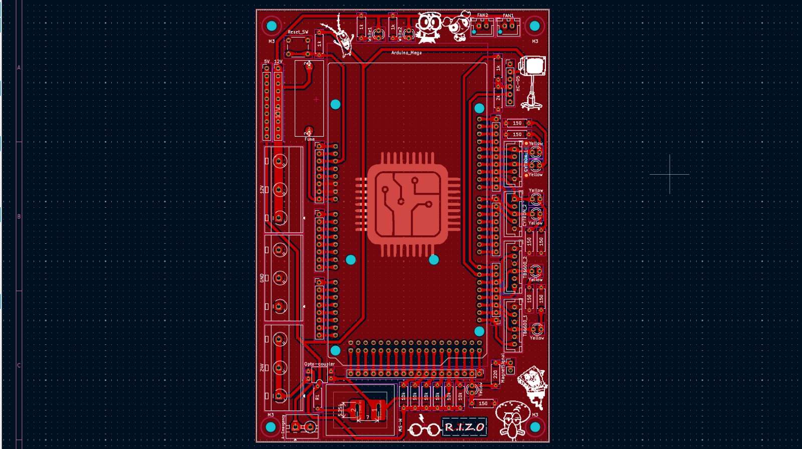
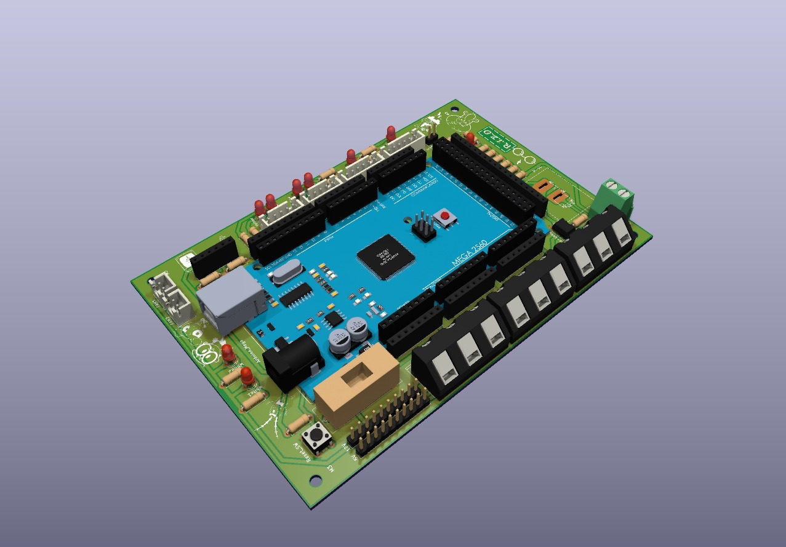
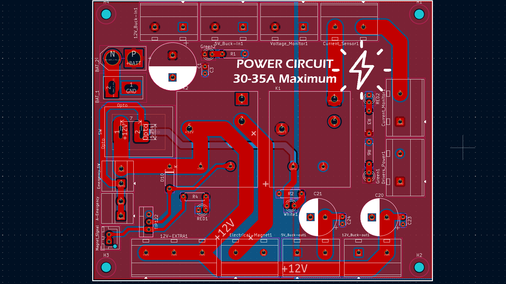
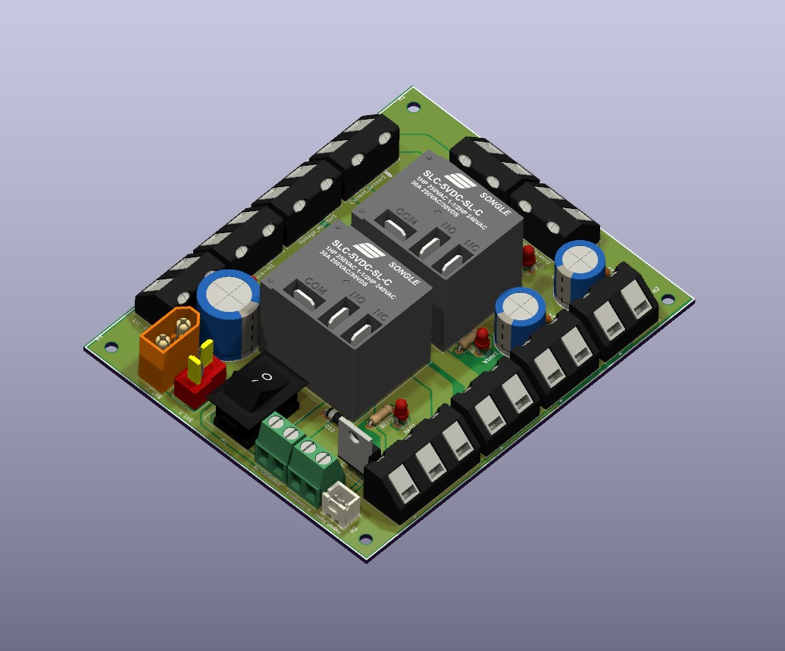

Overview
Graduation project, awarded an Excellent Grade. Designed multi-layer PCBs integrating motor control, a metal detection front-end, and an AI-assisted computer vision pipeline into a complete, field-deployable robotic platform.
The robot autonomously navigates terrain, detects and classifies buried metallic threats, and transmits location data to an operator interface — eliminating the need for human presence in hazardous clearance zones. The system combines multiple sensing modalities for reliable threat detection.
The hardware includes custom motor driver stages, precision metal detection circuitry with adjustable sensitivity, and an onboard compute module running a trained neural network for visual threat classification. All subsystems are powered from a managed battery pack with intelligent power routing.
Technologies
Gallery




